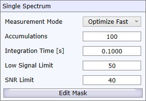
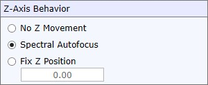
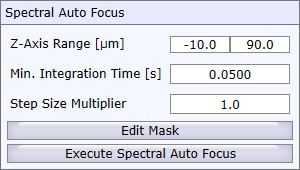
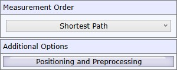

|
拉曼测量
|
拉曼测量视图允许为每个颗粒获取拉曼光谱。
WITec Control配置设置
在开始拉曼测量之前，您可以在WITec Control中选择一个拉曼配置（例如"Raman CCD 1"）。可以测量一组颗粒，然后切换WITec Control配置为"Raman CCD 2"或更改到另一个激发激光器，然后测量其他颗粒。
测量顺序
对于每个颗粒，软件执行以下任务：
单光谱

测量模式
累加次数
光谱测量的累加次数。如果使用超过1次累加，可以执行宇宙射线去除。
积分时间
每次光谱累加的积分时间。
低信号限制
仅用于测量模式"快速优化"。如果单光谱信号低于此值，测量将停止以节省时间。
SNR限制
仅用于测量模式"快速优化"。如果最优累加光谱具有更高的信噪比，测量将停止以节省时间。
编辑掩膜
仅用于测量模式"优化"和"快速优化"。在此您可以定义光谱掩膜，以定义光谱的哪些部分用于计算信号。
Z轴行为

光谱自动对焦
在使用光谱自动对焦之前，调整以下参数：

Z轴范围 / 最小积分时间 / 步长乘数
参见 光谱自动对焦 的WITec Control文档。
编辑掩膜
允许编辑光谱掩膜，定义光谱的哪些部分用于执行自动对焦。
执行光谱自动对焦
在当前位置执行光谱自动对焦。这样您可以测试光谱自动对焦是否按预期工作。
测量顺序和其他选项

测量顺序
在此您可以定义颗粒的测量顺序：
定位和预处理
参见 测量选项。
操作
使用结果
这将把测量的光谱分配给颗粒。
开始测量
开始测量。
暂停/停止测量
停止测量。您可以在最后测量的颗粒处继续，或重新测量所有颗粒。
进度
显示进度和已测量的颗粒数量。
预览
在此您可以选择显示哪个测量的光谱及对应的颗粒。如果选择最后测量的颗粒，预览将自动停留在最新的测量上。
颗粒详细信息
参见 颗粒详细信息。